Mathematical Morphology - Learning Reflection
Author: Tony Fu
Date: August 19, 2023
Device: MacBook Pro 16-inch, Late 2021 (M1 Pro)
Code: GitHub
Reference: Chapter 4 Digital Image Processing with C++: Implementing Reference Algorithms with the CImg Library by Tschumperlé, Tilmant, Barra
1. Erosion and Dilation
I found the book's explanation of erosion and dilation to be a bit confusing. I would recommend watching this video for a more intuitive explanation of the concepts.
Mathematical morphology operations have a straightforward definition when dealing with binary images. For grayscale images, the definitions become more complex:
Binary Images
For binary images and a structuring element , the operations can be defined as follows:
-
Dilation:
-
Erosion:
Gray-Level Images
For grayscale images and a structuring element , the definitions change slightly:
- Dilation:
Dilation causes bright regions to expand and dark regions to contract.
- Erosion:
Erosion causes bright regions to contract and dark regions to expand.
In CImg, we can perform erosion and dilation using the erode() and dilate() functions. Both functions take a structuring element B as an argument.
CImg<unsigned char> img("coins.png");
CImg<> lum = img.get_norm().blur(0.75f);
lum.threshold(lum.median()).normalize(0, 255);
CImg<unsigned char> B = CImg<unsigned char>(3, 3).fill(1);
CImg<unsigned char>
imgErode = lum.get_erode(B), // Erosion
imgDilate = lum.get_dilate(B); // Dilation"
- Original:
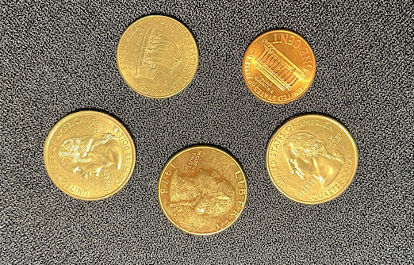
- Binarized Luminance:
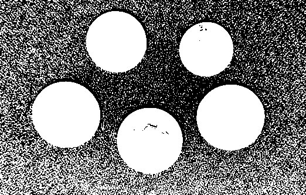
- Then Apply Erosion:
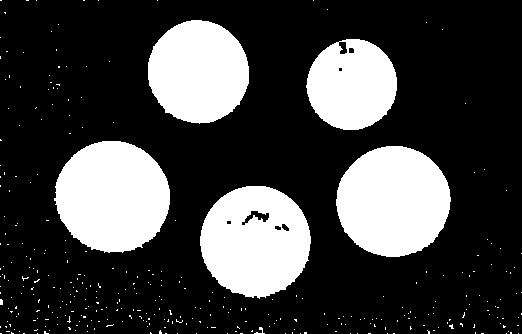
- ... or Dilation:
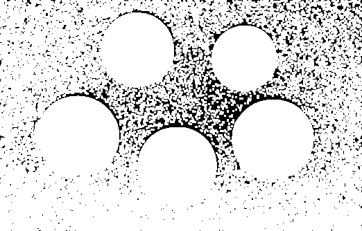
2. Opening and Closing
The opening and closing operations are defined as follows (works for both binary and grayscale images):
-
Opening:
-
Closing:
CImg<unsigned char> B = CImg<unsigned char>(3, 3).fill(1);
CImg<unsigned char>
imgErode = lum.get_erode(B), // Erosion
imgDilate = lum.get_dilate(B), // Dilation"
imgOpen = imgErode.get_dilate(B), // Opening
imgClose = imgDilate.get_erode(B); // Closing
- Opening: Erode, then dilate (removes small objects and smooths larger ones)
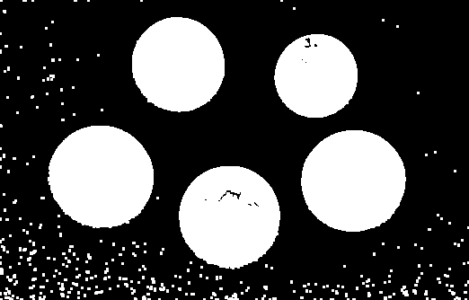
- Closing: Dilate, then erode (closes small holes and joins nearby objects)
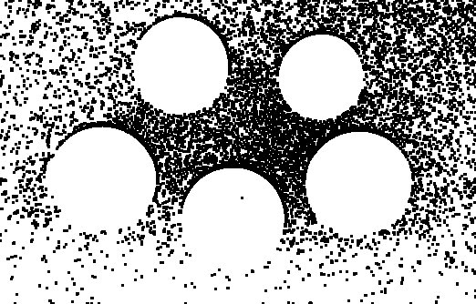
3. Kramer-Bruckner Filter
The Kramer-Bruckner filter is a specific morphological filter used to enhance contrast and reduce noise in an image. It performs a combination of dilation and erosion, typically using a circular structuring element. In math, it can be expressed as the following two formulas:
-
Compute the mid-value for each pixel:
-
Assign the output image values based on the input image and mid-value:
Here, is the input image, is the structuring element, denotes erosion, and denotes dilation.
CImg<> KramerBruckner(CImg<> &imgIn, int n)
{
CImg<>
imgOut(imgIn),
mask = CImg<>(n, n).fill(1),
imgErode = imgIn.get_erode(mask),
imgDilate = imgIn.get_dilate(mask); // Dilation
cimg_forXY(imgOut, x, y)
{
float M = 0.5f * (imgErode(x, y) + imgDilate(x, y));
imgOut(x, y) = (imgIn(x, y) <= M ? imgErode(x, y) : imgDilate(x, y));
}
return imgOut;
}

4. Alternating Sequential Filters (ASF):
Alternating Sequential Filters are a series of morphological operations that are applied sequentially, often involving both erosions and dilations with increasing sizes of structuring elements.
- ASF (n = 1): Erosion, then dilation
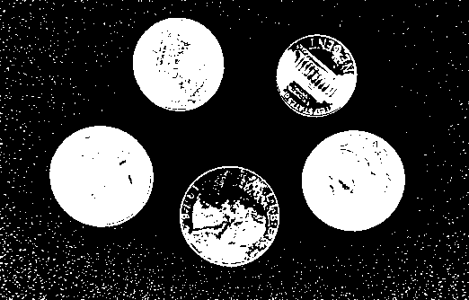
- ASF (n = 3): (Erosion, then dilation) * 3
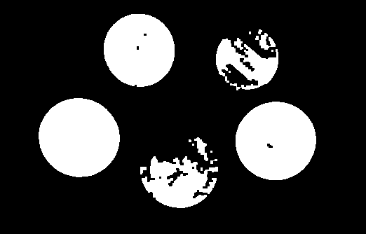
- ASF (n = 11):
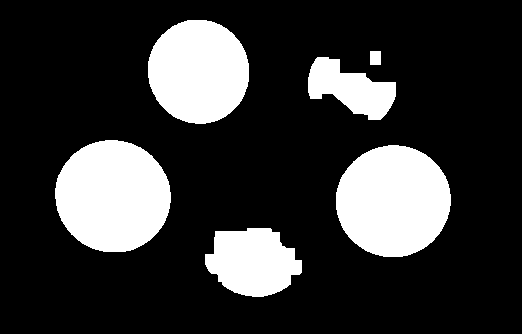
5. Other Morphological Operations
1. Morphological Gradients
Morphological gradients measure the difference between dilation and erosion of an image. In this code, two gradients are computed: the erosion gradient and the dilation gradient.
- Erosion Gradient ():
- Dilation Gradient ():
Gradient E:
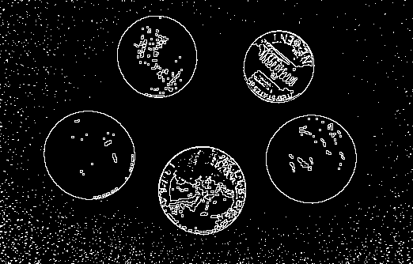
Gradient D:
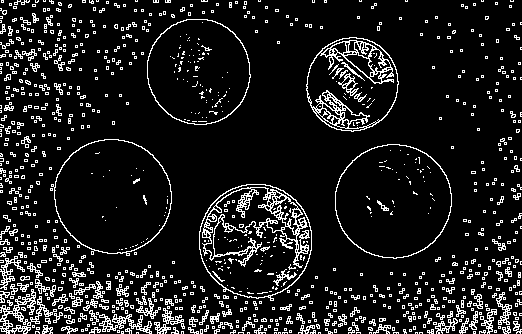
2. Beucher Gradient
The Beucher gradient is another way of expressing the difference between dilation and erosion. It's calculated as the difference between the dilated and eroded images.
- Beucher Gradient:
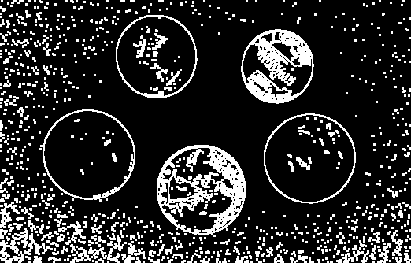
3. Top Hat Transformations
Top hat transformations emphasize differences between the original image and its morphological opening or closing.
- White Top Hat:
- Black Top Hat:
White Top Hat:
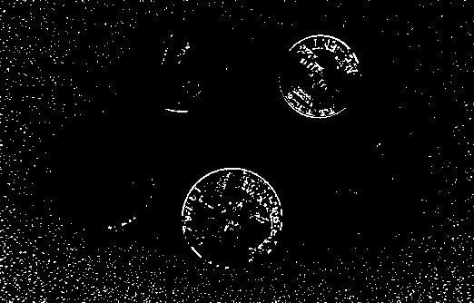
Black Top Hat:

4. Edge Detector (contourMin and contourMax)
These operations compute the minimum and maximum between the erosion and dilation gradients, respectively.
- Contour Min:
- Contour Max:
Contour Min (this is blank because there is no overlap between gradEand gradD)
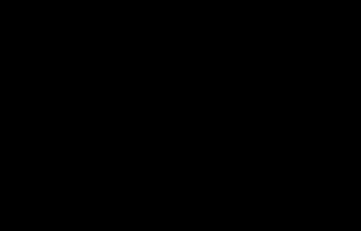
Contour Max:

5. Nonlinear Laplacian
The nonlinear Laplacian is the difference between the dilation and erosion gradients.
- Nonlinear Laplacian:
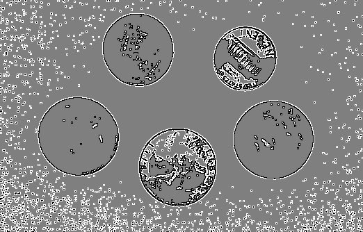
6. Skeletonization
Here we implement the Zhang-Suen skeletonization algorithm using the CImg library in C++. Very Important Note: this method requires that the input image is binary (i.e., pixels are either 0 or 1).
Iterative Skeletonization Function
The main function for skeletonization is IterSkeleton. This function takes a binary image as input and performs two passes, removing certain edge pixels in each pass.
Initializing Variables
CImg<unsigned char> D(imgIn.width(), imgIn.height(), 1, 1, 0);
CImg_3x3(N, unsigned char);
Here, we use D to tag pixels for removal. Whenever a pixel is tagged, we set its value to 1.
Note that CImg_3x3 has the macro format CImg_3x3(I,T):
#define CImg_3x3(I,T) T I[9]; \
T& I##pp = I[0]; T& I##cp = I[1]; T& I##np = I[2]; \
T& I##pc = I[3]; T& I##cc = I[4]; T& I##nc = I[5]; \
T& I##pn = I[6]; T& I##cn = I[7]; T& I##nn = I[8]; \
I##pp = I##cp = I##np = \
I##pc = I##cc = I##nc = \
I##pn = I##cn = I##nn = 0
So that in the subsequent code, we can use N to access the 8 neighbors of a pixel. The variables Npp, Ncp, Nnp, Npc, Nnc, Npn, Ncn, Nnn represent the 8 neighboring pixels around the central pixel (x, y). The variable names correspond to their relative positions:
Npp: Previous row, previous column.Ncp: Current row, previous column.Nnp: Next row, previous column.Npc: Previous row, current column.Nnc: Next row, current column.Npn: Previous row, next column.Ncn: Current row, next column.Nnn: Next row, next column.- The central pixel itself is referred to as
Ncc.
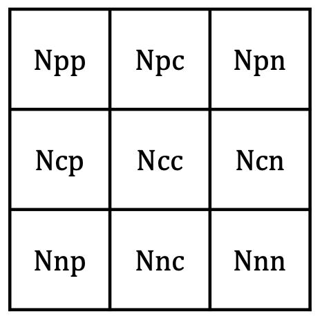
Pass 1
The first pass checks each pixel and its 8 neighbors to determine if it should be removed:
Here, C is the the number of 0-1 transitions in the 8-neighborhood of the pixel. The book's description "C(N), called connectivity number, expressing how many binary components are connected to the central pixel (x,y)" appears to be incorrect.
The conditions for removal are:
Intuitively, this means that the pixel should be removed if:
- It has 2-6 neighbors. (Because if
Bis 0 or 1, then the pixel is an end point or an isolated point.) - It has exactly 1 0-1 transition in its 8-neighborhood because it is likely to be a boundary pixel.
-
and for , and and for : These are specific conditions for Zhang-Suen thinning. They ensure that no spur pixels (pixels that stick out from the object) are created during the thinning process.
For , these conditions make sure that the pixel is not an endpoint in the south and east directions, and that removing it won't break connectivity. The conditions for (see below) do a similar thing, but in the north and west directions. By separating the thinning process into two stages, the algorithm avoids the possibility of over-thinning or under-thinning.
// Pass 1
int n1 = 0;
cimg_for3x3(imgIn, x, y, 0, 0, N, unsigned char)
{
if (imgIn(x, y))
{
// Compute B and C here...
bool R1 = B >= 2 && B <= 6 && C == 1 && Ncn * Nnc * Ncp == 0 && Npc * Ncn * Nnc == 0;
if (R1)
{
// Tag (x,y)
D(x, y) = 1;
++n1;
}
}
}
Removing Tagged Pixels from Pass 1
cimg_forXY(imgIn, x, y)
imgIn(x, y) -= (n1 > 0) * D(x, y);
Pass 2
The second pass is similar to the first, but with different conditions for removal:
Removing Tagged Pixels from Pass 2
Similar to the removal in Pass 1.
Return the Total Number of Removed Pixels
return n1 + n2;
Iterative Skeletonization
int num_removed;
do
{
num_removed = IterSkeleton(lum);
} while (num_removed > 0);
Here, we keep calling IterSkeleton until no pixels are removed in a pass.
Results
- Original:
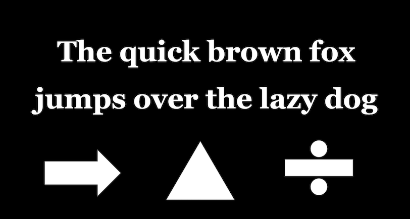
- Skeleton:
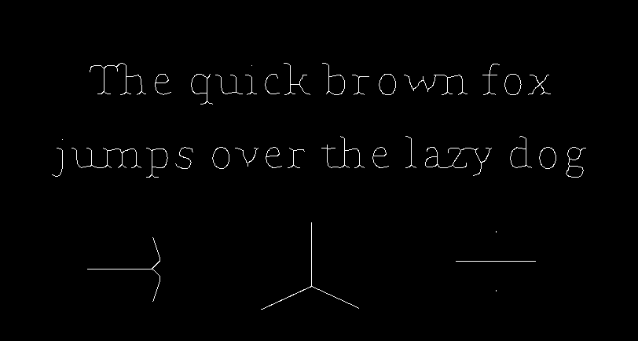